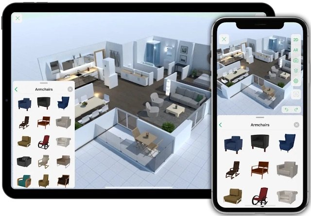
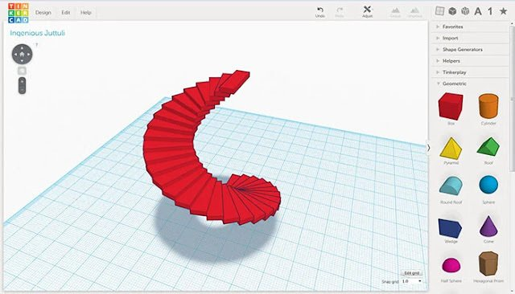
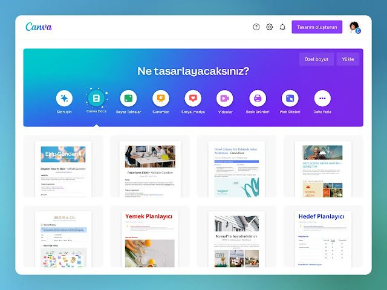
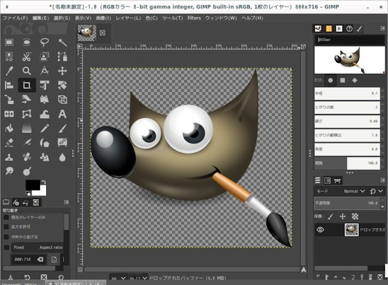
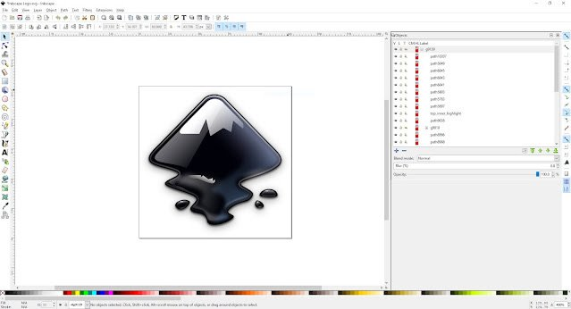
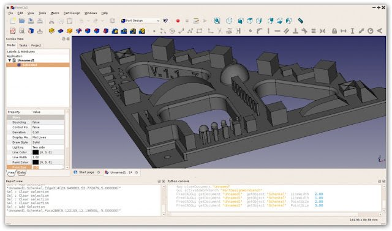

Teknoloji ve Tasarım dersi, öğrencilerimizin yenilikçi düşünme becerilerini geliştirmek ve günlük hayatta karşılaştıkları problemlere somut çözümler üretmelerini sağlamak için harika bir fırsat sunuyor. Ancak bu somut çözümleri her zaman karton ve makasla üretemeyiz. Yeni eğitim felsefemiz (S.T.E.A.M. ve Maarif Modeli), çocukların dijital dünyada da üretici olmalarını şart koşuyor.
Bu yazıda, kısıtlı okul bütçelerini dert etmeden, tamamen ücretsiz ve açık kaynaklı olarak dersimizin farklı ünitelerine entegre edebileceğiniz 6 harika yazılımı sizlerle paylaşıyorum.
1. Planner 5D (Mimari Tasarım İçin İdeal)

Web Adresi: planner5d.com
"Mimari Tasarım" ünitesinde öğrencilere maket ev yaptırmak klasik bir yöntemdir. Ancak Planner 5D ile bu süreci dijitale taşıyabilirsiniz.
- Neden Kullanmalıyız? Sürükle-bırak mantığıyla çalışır. Öğrenciler çok kısa sürede ev planları, oda düzenleri ve mobilya tasarımları yapabilirler.
- En Güçlü Yönü: Tasarımlar hem 2D (mimari kuşbakışı plan) hem de 3D (gerçekçi model) olarak görüntülenebilir. Öğrencilerin üç boyutlu mekân algısını (uzamsal zekâ) inanılmaz derecede geliştirir. Gerçekçi ölçeklendirme ile matematiği tasarımla birleştirir.
2. TinkerCAD (Ürün Geliştirme ve 3D Baskı İçin Mükemmel)

Web Adresi: www.tinkercad.com
"Ürün Geliştirme" ünitesi için adeta biçilmiş kaftandır. Autodesk altyapısına sahip olan bu tarayıcı tabanlı uygulama, çocukların 3D modelleme dünyasına atacağı en eğlenceli ilk adımdır.
- Neden Kullanmalıyız? Kurulum gerektirmez, doğrudan internet tarayıcısı üzerinden çalışır. Temel geometrik şekilleri (silindir, küp, küre) birleştirerek veya içinden çıkararak (delik açarak) karmaşık modeller üretme mantığına dayanır.
- En Güçlü Yönü: Tasarlanan ürünlerin .STL formatında dışa aktarılıp doğrudan 3D yazıcılardan (eğer okulunuzda varsa) basılabilmesidir. Öğrencinin ekranda çizdiği bir anahtarlığı 2 saat sonra eline alması, derse olan motivasyonu zirveye taşır.
3. Canva (Görsel İletişim Tasarımının Yıldızı)

Web Adresi: www.canva.com
"Görsel İletişim Tasarımı" ünitesinde marka, amblem, logo veya afiş tasarlamak için ağır programlar kurmanıza gerek yok.
- Neden Kullanmalıyız? İçerisinde binlerce ücretsiz şablon, ikon ve yazı tipi barındırır. Öğrenciler saniyeler içinde son derece profesyonel görünen posterler, sunumlar veya broşürler hazırlayabilirler.
- En Güçlü Yönü: Eğitimcilere Özel (Canva for Education) sürümü ile öğretmenler sınıf açabilir ve öğrencilerle eş zamanlı (çevrim içi) iş birlikçi çalışmalar yürütebilirler.
4. GIMP (Ücretsiz Photoshop Alternatifi)

Web Adresi: www.gimp.org
Yine "Görsel İletişim Tasarımı" ünitesinde, hazır şablonlar (Canva) kullanmak yerine öğrencilerin sıfırdan piksel tabanlı görsel manipülasyonu öğrenmelerini istiyorsanız, GIMP tek adresinizdir.
- Neden Kullanmalıyız? Lisans ücretleri binlerce lira olan Adobe Photoshop programının yapabildiği hemen hemen her şeyi ücretsiz (açık kaynak) olarak yapabilir.
- En Güçlü Yönü: Katmanlı (Layer) çalışma sistemi. Öğrenciler farklı görselleri kesip birleştirmeyi (klonlama, renk düzenleme) ve kendi dokularını oluşturmayı gerçek bir profesyonel gibi öğrenirler.
5. Inkscape (Vektörel Çizimin Özgür Dünyası)

Web Adresi: inkscape.org
Piksel tabanlı çizimler (GIMP) büyütüldüğünde bozulur. Ancak logo tasarımlarının bozulmaması (vektörel olması) gerekir. İşte Inkscape bunun için var.
- Neden Kullanmalıyız? Ücretsiz bir Adobe Illustrator alternatifidir. Öğrenciler bir marka için logo ve amblem tasarlarken bu yazılımı kullanabilirler.
- En Güçlü Yönü: Matematiksel düşünmeyi mecburi kılar. Öğrenciler Bezier eğrileri çizerken, nesneleri hizalarken veya simetri uygularken farkında olmadan matematiği kullanırlar. Ayrıca web için uyumlu (SVG) dosyalar verir.
6. FreeCAD (Gerçek Mühendisler İçin)

Web Adresi: www.freecad.org
Baştan söyleyeyim; FreeCAD listemizdeki öğrenmesi en zor yazılımdır. Ancak "Mühendislik ve Tasarım" ünitesinde öğrencilerin gerçek bir mühendis gibi düşünmesini istiyorsanız, bu programa katlanmaya değer.
- Neden Kullanmalıyız? Profesyonel ve parametrik bir 3D CAD (Bilgisayar Destekli Tasarım) programıdır.
- En Güçlü Yönü: Tasarımda bir parçanın ölçüsünü (parametresini) değiştirdiğinizde, ona bağlı diğer tüm parçaların otomatik olarak güncellenmesidir. Montaj simülasyonları ile tasarlanan mekanizmaların çalışıp çalışmadığı ekranda test edilebilir.
Sonuç: Hangi Programı Seçmeliyiz?
Bu yazılımları atölyelerimize entegre etmeden önce, öğrencilerimizin "hazır bulunuşluk" seviyelerini mutlaka göz önünde bulundurmalıyız. Canva veya TinkerCAD gibi yazılımlar 1-2 ders saatinde kavranabilirken, FreeCAD veya GIMP gibi yazılımlara adapte olmak haftalar sürebilir.
Unutmayın; teknoloji sadece bir araçtır, amaç değil. Önemli olan öğrencimizin hangi programı ne kadar hızlı kullandığı değil, o programı kullanarak çevresindeki bir probleme nasıl "yenilikçi bir çözüm" ürettiğidir.
Dijital becerilerle zenginleşmiş, bol inovasyonlu ve eğlenceli dersler dilerim!


Yorumlar ve Değerlendirmeler